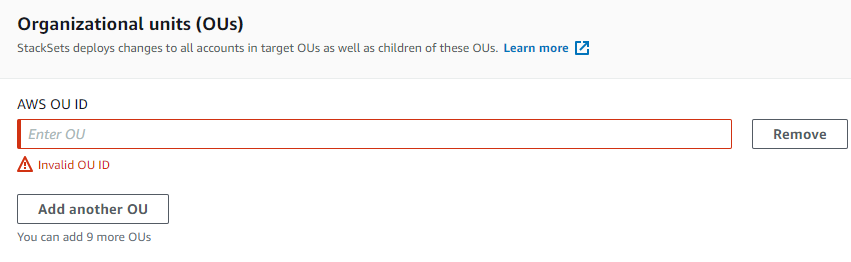

スタックインスタンスのパラメータを上書きする
場合によっては、特定のリージョンまたはアカウントのスタックインスタンスのプロパティ値を、スタックセットそのものに指定されたものとは異なる値にすることがあります。たとえば、アカウントが開発に使用されているか本稼働に使用されているかに基づいて、指定されたパラメータに異なる値を指定する場合を考えます。このような状況で、AWS CloudFormation では、アカウントおよびリージョン別にスタックインスタンスのパラメータ値を上書きできます。スタックインスタンスを初めて作成する際に、テンプレートパラメータの値を上書きできます。また、既存のスタックインスタンスのパラメータ値を上書きすることもできます。スタックインスタンスで以前に上書きしたパラメータは、スタックセットに指定されている値に戻すことのみができます。
パラメータ値の上書きは、選択されたアカウントとリージョンのスタックインスタンスに適用されます。スタックセットの更新中、スタックインスタンスで上書きされたすべてのパラメータ値は更新されず、上書きされた値を保持します。
スタックセットで指定されたパラメータ値のみを上書きできます。パラメータそのものを追加または削除するには、スタックセットのテンプレートを更新する必要があります。スタックセットテンプレートにパラメータを追加する場合、スタックインスタンスのパラメータ値を上書きするには、まずすべてのスタックインスタンスをスタックセットに指定された新しいパラメータと値で更新する必要があります。すべてのスタックインスタンスが新しいパラメータに更新されたら、個別のスタックインスタンスのパラメータ値を必要に応じて上書きできます。
スタックインスタンスの作成時にスタックセットのパラメータ値を上書きする方法については「スタックをスタックセットに追加する」を参照してください。
AWS Management Console を使用してスタックインスタンスのパラメータを上書きするには
https://console.aws.amazon.com/cloudformation
で AWS CloudFormation コンソール を開きます。 -
ナビゲーションペインから [StackSets] を選択します。StackSets ページで、スタックセットの作成 で作成したスタックセットを選択します。このウォークスルーでは、
my-awsconfig-stacksetという名前のスタックセットを作成しました。 -
スタックセットを選択した状態で、[Actions] (アクション) メニューから [Override StackSet parameters] (StackSet パラメータの上書き) を選択します。
![[Manage stacks in stack set (スタックセットのスタックを管理)] ページ](images/console-stacksets-action-override-parameters.png)
-
[Set deployment options (デプロイオプションの設定)] ページで、パラメータを上書きするスタックインスタンスのアカウントとリージョンを指定します。
AWS CloudFormation は、リージョンのデプロイ失敗が指定された耐障害性を超えないという条件で、最初のリージョン内の指定されたアカウントにスタックをデプロイし、次のリージョンに移行し、それが繰り返されます。
-
[セルフマネージド型のアクセス許可] [Deployment targets (デプロイターゲット)] で、[Deploy stacks in accounts (スタックをアカウントにデプロイ)] を選択します。「スタックセットの作成」でスタックセットの作成に使用した一部またはすべてのターゲットアカウント ID を貼り付けます。
[サービスマネージド型のアクセス許可] [Deployment targets (デプロイターゲット)] で、デプロイ先の組織のアカウントを選択します。
-
[Deploy to organizational units (OUs) (組織単位 (OU) にデプロイ)] を選択します。スタックセットの作成 でスタックセットの作成に使用したターゲット OU を 1 つ以上選択します。上書きされたパラメータ値は、ターゲット OU とその子 OU に現在存在するアカウントにのみ適用されます。今後ターゲット OU とその子 OU に追加されるアカウントでは、スタックセットのデフォルト値が使用され、オーバーライドされた値は使用されません。
 -
[Deploy to accounts (アカウントにデプロイ)] を選択します。スタックセットの作成 でスタックセットの作成に使用した一部またはすべてのターゲットアカウント ID を貼り付けます。

-
-
[Deployment regions (デプロイリージョン)] で、このスタックセットのスタックインスタンスをデプロイした 1 つ以上のリージョンを追加します。
複数のリージョンを追加すると、[Specify regions (リージョンの指定)] のリージョンの順序に従って、デプロイの順序が決まります。
-
[Deployment options (デプロイメントオプション)] で次のようにします。
-
[Maximum concurrent accounts (同時アカウントの最大数)] については、デフォルト値の [数値] と [1] をそのまま使用します。
つまり、AWS CloudFormation は一度に 1 つのアカウントのみでスタックをデプロイします。
-
[Failure tolerance (障害耐性)] については、デフォルトの [数値] と [0] をそのまま使用します。
つまり、AWS CloudFormation が現在のリージョンでデプロイを停止し、残りのリージョンでのデプロイをキャンセルする前に、最大で 1 つのスタックデプロイが、指定されたリージョンの 1 つで失敗できるということを意味します。
[Next] を選択します。
-
-
-
[Specify Overrides] (上書きの指定) ページで、[Frequency] (頻度) パラメータを確認し、[Edit override value] (上書き値の編集) メニューから [Override StackSet value] (StackSet 値の上書き) を選択します。
![上書きするパラメータを選択し、[Override StackSet value (StackSet 値の上書き)] を選択する](images/console-stackset-override-parameters-edit-value.png)
-
[Override StackSet parameter values (StackSet パラメータ値の上書き)]で、[頻度] パラメータとして [6 時間] を選択し、[変更の保存] を選択します。これにより、AWS CloudFormation に対し、[頻度] パラメータ値を上書きし、指定されたリージョン内の指定されたアカウントのすべてのスタックインスタンスで [6 時間] を使用するように指示することができます。[Next] を選択します。
注記
上書きされたパラメータを、スタックセットで指定された値を再度使用するように設定するには、すべてのパラメータを確認し、[Edit override value] (上書き値の編集) メニューから [Set to StackSet value] (StackSet 値に設定) を選択します。これにより、スタックインスタンスを更新すると、すべての上書きされた値が削除されます。
-
[確認] ページで選択内容を確認します。[頻度] パラメータの [上書き値] 列に値が表示され、その値がスタックレベルで上書きされたことが示されます。
これらのスタックインスタンスのパラメータを上書きする前に、[CAPABILITY] 領域のチェックボックスをオンにし、スタックセットで作成しているリソースの一部が新しい IAM リソースやアクセス権限を必要とする場合があることを認識します。必要となる可能性がある許可の詳細については、本ガイドの「AWS CloudFormation テンプレートで IAM リソースを認識する」を参照してください。準備ができたら、[Submit] (送信) を選択します。
-
AWS CloudFormation によってスタックインスタンスの作成が開始されます。スタックインスタンス作成の進捗と状況は、[送信] を選択した際に開くスタックセット詳細ページで確認できます。
AWS CLI を使用してスタックインスタンスのパラメータを上書きするには
委任された管理者として行動する場合は、StackSets コマンドを実行するたびに --call-as パラメータを DELEGATED_ADMIN に設定する必要があります。
--call-asDELEGATED_ADMIN
--parameter-overrides を指定して update-stack-instances AWS CLI コマンドを実行します。--parameter-overrides の指定の詳細については、「AWS CloudFormation API リファレンス」の「Parameter」および、「AWS CLI コマンドリファレンス」の「update-stack-instances」を参照してください。
ここで示すサンプルコマンドでは、指定したスタックインスタンスで送信チャネル構成のデフォルトのスナップショット送信頻度を [TwentyFour_Hours] から [Twelve_Hours] に変更します。
-
以下のコマンドを実行します。
--stack-set-nameで、スタックセット名my-awsconfig-stacksetを指定します。次の例で示している通り、
FailureToleranceCountパラメータで0をMaxConcurrentCountに、1を--operation-preferencesに設定することで、障害耐性および同時アカウントの最大数を設定します。代わりに割合を適用するには、FailureTolerancePercentageまたはMaxConcurrentPercentageを使用します。このチュートリアルでは、割合ではなくカウントを使用しています。注記
MaxConcurrentCountの値は、FailureToleranceCountの値に依存します。MaxConcurrentCountは、最大でFailureToleranceCountより 1 だけ多くなります。[セルフマネージド型のアクセス許可] スタックインスタンスのパラメータ値を上書きするアカウント ID を指定します。
aws cloudformation update-stack-instances --stack-set-namemy-awsconfig-stackset--parameter-overrides ParameterKey=MaximumExecutionFrequency,ParameterValue=TwentyFour_Hours\\,Twelve_Hours--operation-preferencesFailureToleranceCount=0,MaxConcurrentCount=1--accounts '["012345678901"]' --regions '["eu-west-1", "us-west-2"]'[Service-managed permissions] (サービスマネージド型のアクセス許可) スタックインスタンスのパラメータ値を上書きする組織のルート ID、OU ID、AWS Organizations のアカウント ID のいずれかを指定します。この例では、OU 内のすべてのアカウントのスタックインスタンスのパラメータ値を
ou-rcuk-1x5j1lwoID で上書きします。上書きされたパラメータ値は、ターゲット OU とその子 OU に現在存在するアカウントにのみ適用されます。今後ターゲット OU とその子 OU に追加されるアカウントでは、スタックセットのデフォルト値が使用され、上書きされた値は使用されません。
aws cloudformation update-stack-instances --stack-set-namemy-awsconfig-stackset--parameter-overrides ParameterKey=MaximumExecutionFrequency,ParameterValue=TwentyFour_Hours\\,Twelve_Hours--operation-preferencesFailureToleranceCount=0,MaxConcurrentCount=1--deployment-targets OrganizationalUnitIds='["ou-rcuk-1x5j1lwo"]' --regions '["eu-west-1", "us-west-2"]' -
describe-stack-set-operationコマンドを実行して更新オペレーションのステータスと結果を表示し、スタックインスタンスでパラメータ値が正常に上書きされたことを確認します。--operation-idには、update-stack-instancesコマンドに返されたオペレーション ID を使用します。aws cloudformation describe-stack-set-operation --operation-idoperation_ID